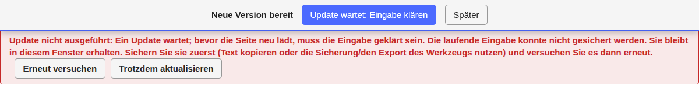

Vorbereitung
← Notfunk-Anleitung · Notfunk-Meldebuch öffnen
Was Sie vor einem Einsatz oder einer Übung erledigen sollten.
Offline verwenden
Das Meldebuch muss im Einsatz ohne Internet laufen. Es gibt zwei empfohlene Wege; richten Sie einen davon vor dem Einsatz ein und probieren Sie ihn aus.
Nur die Adresse im Browser öffnen genügt nicht
Auch wenn das Meldebuch einmal geladen wurde, kann der Browser es ohne Verbindung nicht immer wieder öffnen, zum Beispiel nach einem Neustart des Geräts oder wenn der Browser Speicher aufräumt. Installieren Sie es deshalb als App oder nehmen Sie die Offline-Datei.
Weg 1: als App installieren (empfohlen)
Die installierte App liegt wie jedes andere Programm auf dem Gerät, mit eigenem Symbol und eigenem Fenster, und läuft ohne Internet. Dafür öffnen Sie das Meldebuch einmal mit Internet:
- Öffnen Sie das Notfunk-Meldebuch im Browser und warten Sie, bis oben rechts „offline bereit ✓“ steht. Dabei lädt es alles, was es braucht (Rufzeichenliste, Relaisliste, Wiener Adressen).
- Installieren Sie es:
- Computer mit Chrome oder Edge: das Installieren-Symbol rechts in der Adresszeile anklicken (oder Menü ⋮ → „Notfunk-Meldebuch installieren“). Die App bekommt ein Symbol auf dem Desktop bzw. im Startmenü.
- Android (Chrome): Menü ⋮ → „App installieren“ bzw. „Zum Startbildschirm hinzufügen“.
- iPhone und iPad (Safari): Teilen-Symbol → „Zum Home-Bildschirm“.
- Mac (Safari): Ablage → „Zum Dock hinzufügen“.
- Firefox am Computer kann Web-Apps meist nicht installieren; nehmen Sie dort die Offline-Datei oder Chrome bzw. Edge.
- Starten Sie die App über ihr Symbol.
- Probe: Schalten Sie das Netz ab (Flugmodus, WLAN aus) und starten Sie die App neu. Sie muss sich öffnen und „offline bereit ✓“ zeigen.
Steht oben „offline nicht bereit“, hat der Browser die Offline-Kopie gelöscht: Öffnen Sie die App einmal mit Internet; sie richtet sich dann von selbst wieder ein.
Weg 2: die Offline-Datei für den USB-Stick
Für Laptops ohne Internet, oder als zweite Absicherung, gibt es die Offline-Datei: eine einzelne HTML-Datei (etwa 7 MB), die alles enthält. Sie finden sie unten auf der Startseite des Werkzeugs oder hier: Offline-Datei herunterladen. Kopieren Sie sie auf einen USB-Stick oder das Gerät und öffnen Sie sie mit einem Doppelklick im Browser; es braucht keine Installation und kein Internet.
- Die Offline-Datei und die installierte App haben getrennte Daten. Entscheiden Sie sich in einem Einsatz für eine davon; zum Umziehen verwenden Sie die Sicherung.
Papier als Rückfall
Auch das beste Gerät kann ausfallen. Drucken Sie vor dem Einsatz das leere Formular aus und halten Sie einen Stapel bereit (zusammen mit Stift und Notizpapier); hier herunterladen.
Daten sichern
Alle Meldungen liegen nur auf diesem Gerät. Sichern Sie deshalb regelmäßig.
- Oben rechts steht der Sicherungsstand, zum Beispiel „Sicherung gestartet 14:40 · 3 Meldungen ungesichert“. Ein Klick darauf lädt eine Sicherungsdatei herunter.
- „Gestartet“ heißt: Der Download hat begonnen. Prüfen Sie, dass die Datei im Download-Ordner liegt, und kopieren Sie sie an einen sicheren Ort (USB-Stick, anderer Rechner).
- Steht oben „Speicher dauerhaft ✓“, löscht der Browser die Daten nicht von selbst. Steht dort „nicht dauerhaft“, sichern Sie besonders oft.
Mehr dazu: Sicherung und Wiederherstellung.
Neue Version
Gibt es eine neue Version des Meldebuchs, erscheint oben der Balken „Neue Version bereit“. Sie wird erst verwendet, wenn Sie „Jetzt verwenden“ klicken; mit „Später“ schließen Sie den Balken.
- Das Meldebuch wird dabei neu geladen, in allen offenen Fenstern. Gespeicherte Meldungen und Nummern bleiben unverändert, eine halb ausgefüllte Meldung wird gesichert und danach wieder eingesetzt.
- Speichern Sie vorher fertige Meldungen. Mitten im Einsatz aktualisieren Sie besser erst in einer ruhigen Phase.
- Steht auf dem Knopf „Update wartet: Eingabe klären“, konnte das Meldebuch Ihre halb fertige Eingabe nicht sicher sichern und lädt deshalb nicht neu. Eine rote Meldung unter der Kopfzeile sagt, was zu tun ist; sie bietet die möglichen Schritte gleich als Knöpfe an.

Weiter: Einen Einsatz anlegen